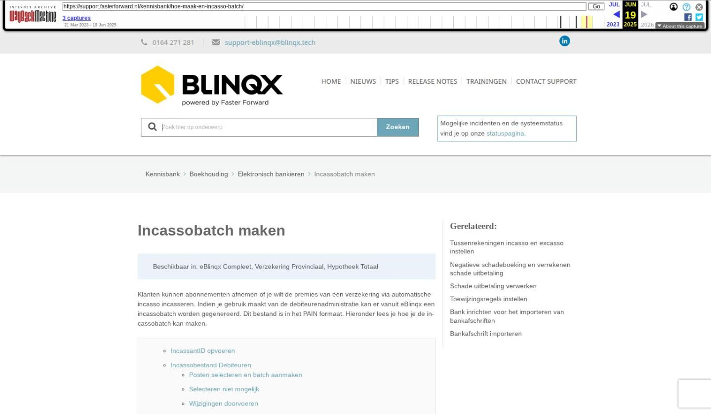

Incassobatch maken

Tekstinhoud
Incassobatch maken
Beschikbaar in: eBlinqx Compleet, Verzekering Provinciaal, Hypotheek Totaal
Klanten kunnen abonnementen afnemen of je wilt de premies van een verzekering via automatische incasso incasseren. Indien je gebruik maakt van de debiteurenadministratie kan er vanuit eBlinqx een incassobatch worden gegenereerd. Dit bestand is in het PAIN formaat. Hieronder lees je hoe je de incassobatch kan maken.
IncassantID opvoeren
Incassobestand Debiteuren
Posten selecteren en batch aanmaken
Selecteren niet mogelijk
Wijzigingen doorvoeren
Batch goedkeuren, bekijken en downloaden
Instellingen batch goedkeuren
Batch niet juist en/of verwijderen
Incassobestand Rekening-courant deelnemer aanmaken
Melding op dit moment al een betalingsbestand verwerkt
Melding tussenrekening niet ingesteld
Incassobatch gebruiken in boekhouding
Incasseren buitenlands IBAN
IncassantID opvoeren
Om een incassobatch aan te kunnen maken moet voor de geselecteerde rekening bij 'betaald naar rekening' een incassantID ingevuld staan. De rekening die hier wordt gevuld, is de rekening die als 'Hoofd' staat aangevinkt bij het betreffende dagboek. In het dagboek moet de Incassant ID, administratie en Land gevuld zijn met IBAN. Is dit niet het geval dan krijg je de melding dat het genereren van het bestand niet zal gaan omdat eerst het IncassantId ingevoerd moet worden. Hier lees je waar je dit kunt doen.
Incassobestand Debiteuren
Posten selecteren en batch aanmaken
Om een incassobatch te maken ga je naar Financieel – Incasso- en excassobestanden maken. Je komt dan op het volgende scherm uit:
Klik nu op 'Debiteuren' onder 'Maak incassobestand'. Je komt dan op onderstaand scherm uit. In het bovenste gedeelte kan je zoeken naar bepaalde betalingen.
Hieronder staan de openstaande posten waarvan je een incassobatch kunt maken. De posten waarvan je een batch wilt maken, kan je selecteren door middel van de checkboxes ervoor. Of je kunt kiezen voor 'Alles op deze pagina (de)selecteren' of 'Alles (de)selecteren' om meerdere posten tegelijk te selecteren. Let op: een incasso kan niet negatief zijn. Deze moet je dus niet selecteren voor je incassobatch.
Zodra je posten hebt geselecteerd verschijnt het volgende blok:
In dit blok vind je het volgende:
Optellen per debiteur: indien dit vakje is aangevinkt, worden alle bedragen bij dezelfde relatie verzameld tot één betaling.
Betalingen als 1 regel tonen op afschrift: indien dit vakje is aangevinkt, worden alle bedragen verzameld tot één betaling.
Betaald naar rekening: standaard wordt hier de bankrekening getoond die als 'Hoofd' staat aangevinkt bij het betreffende dagboek. In het dagboek moet de Incassant ID, administratie en Land gevuld zijn met IBAN.
Omschrijving: hier kan je bij iedere betaling dezelfde betalingsreferentie meegeven.
Uitvoerdatum incasso: SEPA vereist minimaal 2 werkdagen vanaf vandaag
Heb je alle juiste posten geselecteerd en de velden onder 'Selectie incasseren' juist ingevuld dan kan je klikken op de knop 'Bedrag incasseren'.
Selecteren niet mogelijk
Als de debiteur niet goed staat ingericht dan is het niet mogelijk om de openstaande post te selecteren. Er staat dan een oranje driehoek onder IBAN of mandaat. Beiden moeten ingesteld staan onder de debiteur. Hier lees je er meer over hoe je dit kunt doen.
Wijzigingen doorvoeren
Nadat je hebt geklikt op de knop 'Bedrag incasseren' kom je uit op een tussenscherm waarin je nog aanpassingen kan doen in bijvoorbeeld het bedrag wat je wilt incasseren of de betalingsfrequentie. Let op: als je bij het aanmaken bij de batch hebt gekozen voor 'Optellen per per debiteur' dan is het niet mogelijk om de bedragen aan te passen. Ook kan je een omschrijving per regel meegeven.
Is alles juist dan kan je de pagina opslaan.
Batch goedkeuren, bekijken en downloaden
Je komt dan in het scherm waar de batch goedgekeurd kan worden door middel van het vinkje. Na goedkeuren verandert het vinkje in een vergrootglas. Door te klikken op het vergrootglas of de omschrijving kan je alle posten zien die in de batch zitten.
Het PAIN bestand kan je downloaden via het icoon: €. Dit PAIN bestand kan je op slaan op de door jou gewenste locatie. Vervolgens kan je deze in jouw telebankierprogramma inlezen om de betalingen daadwerkelijk te verrichten. De aangemaakte bestanden vind je terug onder het tabblad Aangemaakte bestanden. Hier kan je ze eventueel op een later moment alsnog goedkeuren.
Instellingen batch goedkeuren
Er zijn diverse instellingen mogelijk voor het goedkeuren van de batch. Dit kan je instellen via Financieel – Administraties onderhoud – betreffende administratie – tabblad Algemeen. De volgende opties zijn mogelijk:
Automatisch goedkeuren: je hoeft de batch niet meer handmatig goed te keuren
Boven een bepaald bedrag: hier kan je een bedrag instellen vanaf welk bedrag de batch handmatig goedgekeurd moet worden. Batches met bedragen onder dit bedrag worden automatisch goedgekeurd
Handmatig goedkeuren: je moet iedere batch handmatig goedkeuren
Batch niet juist en/of verwijderen
De aangemaakte incasso- en excassobestanden vind je terug onder het tabblad Aangemaakte bestanden. Indien het betalingsbestand niet akkoord of juist is, druk je op het verwijdericoon (kruisje) achter het betreffende bestand. De batch wordt verwijderd en alle posten in dit bestand worden opnieuw opengezet. Deze kan je opnieuw selecteren in een nieuw bestand zoals hiervoor beschreven. Het is niet mogelijk om losse posten uit de batch te verwijderen.
Je kan een batch verwijderen als deze aan de volgende voorwaarden voldoet:
De batch is nog niet goedgekeurd
De batch is goedgekeurd en de periode van het boekstuk van deze batch staat nog open.
Als in het boekstuk van deze batch de regel op de tussenrekening nog niet is afgeletterd (dit is de geconsolideerde post) dan wordt deze verwijderd en de batch ook. Is deze post al wel afgeletterd dan krijg je de melding "Deze batch bevat afgeletterde posten. Om deze batch te verwijderen moeten de afletteringen ongedaan gemaakt worden."
De batch is goedgekeurd en de periode van het boekstuk van deze batch staat NIET meer open.
Je krijgt dan de melding "Weet u zeker dat u de batch wilt verwijderen, de periode van deze batch is reeds gesloten. Aangeraden is om de periode open te zetten en dit opnieuw uit te voeren." Het handigst is dan om op 'Nee' te drukken. Klik je op 'Ja' dan moet het gehele boekstuk gespiegeld worden kan hierna ook de batch verwijderd worden.
Incassobestand Rekening-courant deelnemer aanmaken
Het is ook mogelijk om een incassobestand Rekening-courant deelnemer aan te maken. Hiervoor doorloop je ook bovenstaande stappen. Je kiest dan natuurlijk wel voor Maak incassobestand – Rekening – courant deelnemer.
Een deelnemer komt in dit overzicht naar voren als het saldo "negatief" is en geïncasseerd moet worden. Dit betekent dat er op de grootboekrekening meer credit is geboekt dan debet binnen de selectie die is gemaakt. Onder de deelnemer moet het IBAN en mandaatcode goed ingesteld staan om te kunnen incasseren. Dit instellen doe je onder Beheer – Organisatie & Personen – betreffende deelnemer – tabblad Financieel. Is dit niet het geval dan verschijnt er een oranje driehoek bij de openstaande post in de module Incasso- en excassobestanden maken. Je kunt dan vanuit daar direct doorklikken naar het juiste scherm.
Het verschil met debiteuren is dat bij de openstaande posten het bedrag een verzamelbedrag is per deelnemer. Dit zijn niet alle losse posten/bedragen, maar een totaal saldo hiervan. Wanneer het incassobestand is aangemaakt, kan je via het vergrootglasicoon de inhoud van het bestand bekijken. Je ziet dan alle posten waaruit het bedrag is opgebouwd. Hier staat dan ook een PDF-downloadicoon. Op dit PDF-bestand staan de specificaties van het totale bedrag.
Een ander verschil is dat bedragen niet aangepast kunnen worden op het tussenscherm. Ook wordt de batch altijd direct automatisch goedgekeurd. Hier zijn geen aparte instellingen voor.
Melding op dit moment al een betalingsbestand verwerkt
Betalingsbatches moeten (automatisch) goedgekeurd worden. Indien er nog een batch openstaat die niet goedgekeurd is, verschijnt de melding 'Er wordt op dit moment al een betalingsbatch van 'Debiteuren' verwerkt. Daarom is het niet mogelijk een nieuwe uitbetaling te doen. Keur dit betalingsbestand goed om een nieuw betalingsbestand aan te kunnen maken.'
De niet goedgekeurde batches kan je terugvinden in het tabblad Aangemaakte bestanden en zijn te herkennen aan een potloodje en vinkje. Om de melding te laten verdwijnen dien je deze batches goed te keuren of te verwijderen.
Melding tussenrekening niet ingesteld
Om een incassobatch te kunnen maken moet er een tussenrekening staan ingesteld onder de subadministratie. Is dit niet het geval dan verschijnt de volgende melding:
Hier lees je meer over het instellen van de tussenrekening.
Incassobatch gebruiken in boekhouding
Bij het verwerken van je bankafschrift in de boekhouding in eBlinqx wil je het bedrag op je bankafschrift afletteren. Hiervoor kan je gemakkelijk de aangemaakte incassobatch gebruiken. In het boekstuk selecteer je bij de grootboekrekening de juiste subadministratie, bijvoorbeeld 1200 Debiteuren. Vervolgens klik je bij relatie op F6 om de openstaande posten te kunnen selecteren. Hier kan je vervolgens de incassobatch selecteren en invoegen. eBlinqx maakt er dan automatisch de gekoppelde tussenrekening van, zodat dit boekhoudkundig correct verwerkt wordt.
Incasseren buitenlands IBAN
Of je kan/mag incasseren van buitenlandse IBAN is afhankelijk van de incasso-overeenkomst. Als je deze hebt dan kan je alle landen met IBAN incasseren. Je moet dan wel het bestandsformaat gebruiken wat de bank vereist.
Laatste update: 17 juni 2025
Tagged: incasso
Was deze informatie nuttig?
Ja Nee